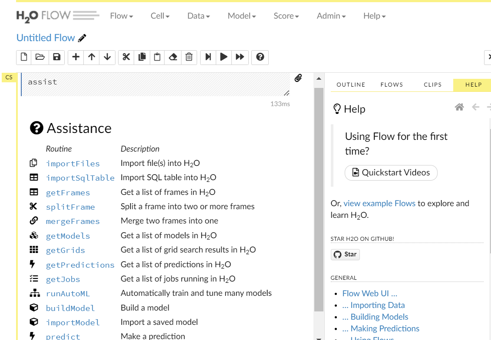

install.packages("h2o")25 Xây dựng mô hình với H2O
25.1 Giới thiệu
- H2O là một phần mềm dựa trên nền tảng của Java dùng để mô hình hóa dữ liệu (data modeling) và tính toán nói chung.
- H2O là một platform mã nguồn mở hàng đầu thế giới hiện nay về Machine Learning và AI.
- Hỗ trợ nhiều phần mềm khác nhau như: R, Python, Azure, Spark…
25.2 Cài đặt và khởi động
Để cài đặt và khởi động H2O, chúng ta cần thực hiện các bước sau:
- Bước 1: Cài đặt Java
- Download & cài đặt Java https://www.oracle.com/java/technologies/downloads/
Thực hiện câu lệnh sau
sudo apt-get update
sudo apt install default-jdk- Bước 2: Cài đặt R package
h2o
- Bước 3: Khởi động H2O từ R - sử dụng câu lệnh
h2o.init()
library(h2o)
h2o.init(ip = "localhost",
port = 54321,
nthreads= -1,
max_mem_size = "4g") # Đặt mức RAM tối đa Connection successful!
R is connected to the H2O cluster:
H2O cluster uptime: 1 hours 18 minutes
H2O cluster timezone: Etc/UTC
H2O data parsing timezone: UTC
H2O cluster version: 3.42.0.2
H2O cluster version age: 11 months and 25 days
H2O cluster name: H2O_started_from_R_jovyan_ydg016
H2O cluster total nodes: 1
H2O cluster total memory: 3.86 GB
H2O cluster total cores: 2
H2O cluster allowed cores: 2
H2O cluster healthy: TRUE
H2O Connection ip: localhost
H2O Connection port: 54321
H2O Connection proxy: NA
H2O Internal Security: FALSE
R Version: R version 4.3.0 (2023-04-21) Lưu ý: Trong trường hợp chúng ta muốn tắt H2O cluster, chúng ta có thể sử dụng câu lệnh sau:
h2o.shutdown(prompt = T)25.3 Thực hành với R
Để thực hành xây dựng mô hình dự báo với H2O, chúng ta sẽ sử dụng dữ liệu có sẵn trong R - credit_data trong package modeldata.
Đây là dữ liệu ghi nhận về lịch sử vay của khách hàng, với các 61 biến đầu vào cùng với biến đầu ra Class ghi nhận thực tế là các khoản vay đó có phải là khoản nợ xấu hay không. Chúng ta sẽ dự báo khoản vay nào không có nợ xấu.
25.3.1 Lấy dữ liệu
# Bước 1: Lấy dữ liệu
library(modeldata)
data("credit_data")25.3.2 Kiểm tra dữ liệu
# Bước 2: Kiểm tra dữ liệu
# Kiểm tra định dạng các biến trong tập dữ liệu
library(dplyr)
credit_data %>% str'data.frame': 4454 obs. of 14 variables:
$ Status : Factor w/ 2 levels "bad","good": 2 2 1 2 2 2 2 2 2 1 ...
$ Seniority: int 9 17 10 0 0 1 29 9 0 0 ...
$ Home : Factor w/ 6 levels "ignore","other",..: 6 6 3 6 6 3 3 4 3 4 ...
$ Time : int 60 60 36 60 36 60 60 12 60 48 ...
$ Age : int 30 58 46 24 26 36 44 27 32 41 ...
$ Marital : Factor w/ 5 levels "divorced","married",..: 2 5 2 4 4 2 2 4 2 2 ...
$ Records : Factor w/ 2 levels "no","yes": 1 1 2 1 1 1 1 1 1 1 ...
$ Job : Factor w/ 4 levels "fixed","freelance",..: 2 1 2 1 1 1 1 1 2 4 ...
$ Expenses : int 73 48 90 63 46 75 75 35 90 90 ...
$ Income : int 129 131 200 182 107 214 125 80 107 80 ...
$ Assets : int 0 0 3000 2500 0 3500 10000 0 15000 0 ...
$ Debt : int 0 0 0 0 0 0 0 0 0 0 ...
$ Amount : int 800 1000 2000 900 310 650 1600 200 1200 1200 ...
$ Price : int 846 1658 2985 1325 910 1645 1800 1093 1957 1468 ...# Kiểm tra biến đầu ra (biến muốn dự báo)
credit_data$Status %>%
table %>%
prop.table.
bad good
0.2815447 0.7184553 Như vậy, chúng ta thấy trong tập dữ liệu này:
- 72% là các khoản vay không có nợ xấu
- 28% là các khoản vay có nợ xấu
25.3.3 Khởi động H2O
# Bước 3: Khởi động H2O
library(h2o)
h2o.init(ip = "localhost",
port = 54321,
nthreads= -1,
max_mem_size = "3g") # Đặt mức RAM tối đa Connection successful!
R is connected to the H2O cluster:
H2O cluster uptime: 1 hours 18 minutes
H2O cluster timezone: Etc/UTC
H2O data parsing timezone: UTC
H2O cluster version: 3.42.0.2
H2O cluster version age: 11 months and 25 days
H2O cluster name: H2O_started_from_R_jovyan_ydg016
H2O cluster total nodes: 1
H2O cluster total memory: 3.86 GB
H2O cluster total cores: 2
H2O cluster allowed cores: 2
H2O cluster healthy: TRUE
H2O Connection ip: localhost
H2O Connection port: 54321
H2O Connection proxy: NA
H2O Internal Security: FALSE
R Version: R version 4.3.0 (2023-04-21) 25.3.4 Đưa dữ liệu vào H2O
Để đưa dữ liệu vào H2O, chúng ta sử dụng câu lệnh: as.h2o().
credit_data %>% head Status Seniority Home Time Age Marital Records Job Expenses Income
1 good 9 rent 60 30 married no freelance 73 129
2 good 17 rent 60 58 widow no fixed 48 131
3 bad 10 owner 36 46 married yes freelance 90 200
4 good 0 rent 60 24 single no fixed 63 182
5 good 0 rent 36 26 single no fixed 46 107
6 good 1 owner 60 36 married no fixed 75 214
Assets Debt Amount Price
1 0 0 800 846
2 0 0 1000 1658
3 3000 0 2000 2985
4 2500 0 900 1325
5 0 0 310 910
6 3500 0 650 1645# Lower name
names(credit_data) <- names(credit_data) %>% tolower()
# Bước 4: Đưa dữ liệu vào h2o
data_h2o <- as.h2o(credit_data)
|
| | 0%
|
|======================================================================| 100%25.3.5 Chia dữ liệu train/test
Chia tập dữ liệu thành 2 tập dữ liệu train và test (tỷ lệ 80-20)
# Bước 5: Chia tập dữ liệu thành: train/test (tỷ lệ 80/20)
set.seed(1234)
data_split = h2o.splitFrame(data = data_h2o,
ratios = 0.8)
train = data_split[[1]]
test = data_split[[2]]
# Tập dữ liệu train (data frame)
train_df <- as.data.frame(train)
train_df$status %>% table.
bad good
997 2517 # Tập dữ liệu test (data frame)
test_df <- as.data.frame(test)
test_df$status %>% table.
bad good
257 683 25.3.6 Xây dựng mô hình trên tập train
Để xây dựng mô hình dự báo với H2O, chúng ta có thể sử dụng những câu lệnh khác nhau tương ứng với từng phương pháp/thuật toán như: Logistic regression, Random Forests, Boosting…
h2o.glm()- Logistic regressionh2o.randomForest()- Random Forestsh2o.gbm()- Boosting
Ta sẽ sử dụng h2o.gbm trong toàn bộ quá trình hướng dẫn về train & tune mô hình trên H2O
# Bước 6: Xây dựng mô hình trên train
start_time <- Sys.time()
set.seed(1)
gbm_model1 <- h2o.gbm(training_frame = train, # Tập dữ liệu train
x = setdiff(names(credit_data), "status"), # Các biến đầu vào
y = "status" # Biến đầu ra (biến muốn dự báo)
)
|
| | 0%
|
|=========================================== | 62%
|
|======================================================================| 100%end_time <- Sys.time()
time <- end_time - start_time
timeTime difference of 2.366523 secsChúng ta thấy việc xây dựng mô hình với H2O có tốc độ rất nhanh, xây dựng mô hình với các tham số cơ bản với dữ liệu này chỉ mất khoảng 2.37 giây. Đương nhiên trong trường hợp này dữ liệu nhỏ nên chúng ta chưa nhìn thấy rõ ưu điểm vượt trội của H2O về tốc độ, nhưng trong trường hơp dữ liệu lớn, việc sử dụng H2O sẽ rút ngắn thời gian xây dựng mô hình dự báo của chúng ta đi rất nhiều.
# Summary model
gbm_model1 %>% summaryModel Details:
==============
H2OBinomialModel: gbm
Model Key: GBM_model_R_1721520775246_5409
Model Summary:
number_of_trees number_of_internal_trees model_size_in_bytes min_depth
1 50 50 19226 5
max_depth mean_depth min_leaves max_leaves mean_leaves
1 5 5.00000 17 32 25.94000
H2OBinomialMetrics: gbm
** Reported on training data. **
MSE: 0.09385543
RMSE: 0.3063583
LogLoss: 0.3147498
Mean Per-Class Error: 0.161882
AUC: 0.9357281
AUCPR: 0.9714834
Gini: 0.8714562
R^2: 0.5381675
Confusion Matrix (vertical: actual; across: predicted) for F1-optimal threshold:
bad good Error Rate
bad 736 261 0.261785 =261/997
good 156 2361 0.061979 =156/2517
Totals 892 2622 0.118668 =417/3514
Maximum Metrics: Maximum metrics at their respective thresholds
metric threshold value idx
1 max f1 0.563945 0.918856 222
2 max f2 0.396719 0.949796 278
3 max f0point5 0.693235 0.923835 175
4 max accuracy 0.582656 0.881616 216
5 max precision 0.982744 1.000000 0
6 max recall 0.164248 1.000000 357
7 max specificity 0.982744 1.000000 0
8 max absolute_mcc 0.582656 0.703714 216
9 max min_per_class_accuracy 0.703102 0.859579 171
10 max mean_per_class_accuracy 0.693235 0.862920 175
11 max tns 0.982744 997.000000 0
12 max fns 0.982744 2513.000000 0
13 max fps 0.028254 997.000000 399
14 max tps 0.164248 2517.000000 357
15 max tnr 0.982744 1.000000 0
16 max fnr 0.982744 0.998411 0
17 max fpr 0.028254 1.000000 399
18 max tpr 0.164248 1.000000 357
Gains/Lift Table: Extract with `h2o.gainsLift(<model>, <data>)` or `h2o.gainsLift(<model>, valid=<T/F>, xval=<T/F>)`
Scoring History:
timestamp duration number_of_trees training_rmse training_logloss
1 2024-07-21 01:31:27 0.022 sec 0 0.45080 0.59643
2 2024-07-21 01:31:27 0.054 sec 1 0.43683 0.56675
3 2024-07-21 01:31:28 0.104 sec 2 0.42488 0.54279
4 2024-07-21 01:31:28 0.133 sec 3 0.41477 0.52310
5 2024-07-21 01:31:28 0.174 sec 4 0.40619 0.50680
training_auc training_pr_auc training_lift training_classification_error
1 0.50000 0.71628 1.00000 0.28372
2 0.82756 0.91358 1.37025 0.19550
3 0.84619 0.92053 1.34660 0.18640
4 0.85325 0.92546 1.35631 0.18412
5 0.85400 0.92514 1.35631 0.18412
---
timestamp duration number_of_trees training_rmse
46 2024-07-21 01:31:29 1.532 sec 45 0.31040
47 2024-07-21 01:31:29 1.580 sec 46 0.30989
48 2024-07-21 01:31:29 1.608 sec 47 0.30903
49 2024-07-21 01:31:29 1.648 sec 48 0.30808
50 2024-07-21 01:31:29 1.673 sec 49 0.30722
51 2024-07-21 01:31:29 1.700 sec 50 0.30636
training_logloss training_auc training_pr_auc training_lift
46 0.32226 0.93209 0.96943 1.39611
47 0.32123 0.93246 0.96960 1.39611
48 0.31969 0.93326 0.96997 1.39611
49 0.31793 0.93426 0.97062 1.39611
50 0.31639 0.93478 0.97082 1.39611
51 0.31475 0.93573 0.97148 1.39611
training_classification_error
46 0.12237
47 0.12294
48 0.12180
49 0.11981
50 0.12094
51 0.11867
Variable Importances: (Extract with `h2o.varimp`)
=================================================
Variable Importances:
variable relative_importance scaled_importance percentage
1 seniority 324.636536 1.000000 0.166827
2 income 301.767517 0.929555 0.155075
3 records 296.553772 0.913495 0.152395
4 amount 233.128555 0.718122 0.119802
5 job 163.762939 0.504450 0.084156
6 home 132.941345 0.409508 0.068317
7 assets 113.164719 0.348589 0.058154
8 price 105.915077 0.326257 0.054428
9 expenses 77.263611 0.238000 0.039705
10 age 71.007111 0.218728 0.036490
11 time 56.115288 0.172856 0.028837
12 debt 36.218292 0.111566 0.018612
13 marital 33.476219 0.103119 0.017203Nhìn vào kết quả mô hình vừa được xây dựng trên tập train, chúng ta có thể thấy một số thông tin quan trọng sau:
- Các tham số (
parameters) cơ bản của mô hình:number_of_trees= 50: Số lượng cây là 50max_depth= 5: Mỗi cây có 5 tầng (mức độ phức tạp của mô hình)
- AUC trên tập train: 0.935
- Dựa vào mục
Confusion Matrixtại điểm tối ưu hóa chỉ số F1-score có thể tính toán được:error rate(tỷ lệ quan sát dự báo sai): 11.87%accuracy(tỷ lệ quan sát dự báo đúng): 1 - 11.87%= 88.13%precision: 736/997 = 74% - trong 100 khách hàng dự báo làbad, có 74 khách hàng hàng thực sự làbadrecall: 736/892 = 82.5% - trong 100 khách hàng thực tế làbad, mô hình dự báo phủ được chính xác 82 khách hàng
- Dựa vào mục
Maximum Metrics, chúng ta có thể biết được các ngưỡng cutoff xác suất để tối ưu hóa các chỉ số như accuracy, precision, recall, f1-score…max f1: Điểm cutoff xác suất là 0.56max accuracy: 0.582max recall: 0.164max precision: 0.982
- Dựa vào mục
Variable Importances, chúng ta có thể biết được những biến nào có ảnh hưởng nhiều nhất đến biến đầu ra mà chúng ta muốn dự báo (có thể sử dụng câu lệnhh2o.varimp()để xem chi tiết). Trong trường hợp này, 4 biến có ảnh hưởng nhiều nhất tới biếnstatustheo thứ tự là:- seniority
- income
- records
- amount
# Kiểm tra chi tiết các biến có ảnh hướng nhiều tới biến dự báo trong mô hình
gbm_model1 %>%
h2o.varimp() %>%
as.data.frame %>%
knitr::kable()| variable | relative_importance | scaled_importance | percentage |
|---|---|---|---|
| seniority | 324.63654 | 1.0000000 | 0.1668267 |
| income | 301.76752 | 0.9295550 | 0.1550746 |
| records | 296.55377 | 0.9134948 | 0.1523953 |
| amount | 233.12856 | 0.7181217 | 0.1198019 |
| job | 163.76294 | 0.5044501 | 0.0841557 |
| home | 132.94135 | 0.4095083 | 0.0683169 |
| assets | 113.16472 | 0.3485890 | 0.0581539 |
| price | 105.91508 | 0.3262574 | 0.0544284 |
| expenses | 77.26361 | 0.2380004 | 0.0397048 |
| age | 71.00711 | 0.2187280 | 0.0364897 |
| time | 56.11529 | 0.1728557 | 0.0288369 |
| debt | 36.21829 | 0.1115657 | 0.0186121 |
| marital | 33.47622 | 0.1031191 | 0.0172030 |
25.3.7 Dự báo trên tập test
# Bước 7: Dự báo trên tập test
pred_test1 <- h2o.predict(gbm_model1, newdata = test) %>%
as.data.frame()
|
| | 0%
|
|======================================================================| 100%pred_test1 %>% head predict bad good
1 good 0.19107951 0.80892049
2 bad 0.91849176 0.08150824
3 good 0.07805707 0.92194293
4 bad 0.63806808 0.36193192
5 good 0.03455521 0.96544479
6 good 0.01889339 0.98110661Nhìn vào kết quả trên, ta có thể biết được những thông tin sau:
- Cột
predict: Làstatuscủa khoản vay được dự báogood: Khoản vay không phải là khoản nợ xấubad: Khoản vay là khoản nợ xấu
bad: Xác suất khoản vay là khoản nợ xấugood: Xác suất khoản vay là khoản không có nợ xấu
25.3.8 Đánh giá chất lượng dự báo trên test
# Bước 8: Đánh giá chất lượng dự báo trên test
# Confusion matrix
table(as.vector(pred_test1$predict),
test_df$status,
dnn = c("Predicted", "Actual")
) Actual
Predicted bad good
bad 147 82
good 110 601## AUC
perf <- h2o.performance(gbm_model1, test)
h2o.auc(perf)[1] 0.8259852Như vậy, AUC mô hình trên validation chỉ đạt khoảng 82%
Lưu ý
Với H2O, chúng ta hoàn toàn có thể xây dựng mô hình trên tập train, rồi sau đó đánh giá chất lượng trên tập train và test đồng thời
set.seed(2)
gbm_model2 <- h2o.gbm(training_frame = train, # Xây dựng trên train
x = setdiff(names(credit_data), "status"), # Các biến đầu vào
y = "status", # Biến đầu ra (biến muốn dự báo)
validation_frame = test # Đánh giá trên test
)
|
| | 0%
|
|========================================== | 60%
|
|======================================================================| 100%gbm_model2 %>% summaryModel Details:
==============
H2OBinomialModel: gbm
Model Key: GBM_model_R_1721520775246_5462
Model Summary:
number_of_trees number_of_internal_trees model_size_in_bytes min_depth
1 50 50 19224 5
max_depth mean_depth min_leaves max_leaves mean_leaves
1 5 5.00000 17 32 25.94000
H2OBinomialMetrics: gbm
** Reported on training data. **
MSE: 0.09385543
RMSE: 0.3063583
LogLoss: 0.3147498
Mean Per-Class Error: 0.161882
AUC: 0.9357281
AUCPR: 0.9714834
Gini: 0.8714562
R^2: 0.5381675
Confusion Matrix (vertical: actual; across: predicted) for F1-optimal threshold:
bad good Error Rate
bad 736 261 0.261785 =261/997
good 156 2361 0.061979 =156/2517
Totals 892 2622 0.118668 =417/3514
Maximum Metrics: Maximum metrics at their respective thresholds
metric threshold value idx
1 max f1 0.563945 0.918856 222
2 max f2 0.396719 0.949796 278
3 max f0point5 0.693235 0.923835 175
4 max accuracy 0.582656 0.881616 216
5 max precision 0.982744 1.000000 0
6 max recall 0.164248 1.000000 357
7 max specificity 0.982744 1.000000 0
8 max absolute_mcc 0.582656 0.703714 216
9 max min_per_class_accuracy 0.703102 0.859579 171
10 max mean_per_class_accuracy 0.693235 0.862920 175
11 max tns 0.982744 997.000000 0
12 max fns 0.982744 2513.000000 0
13 max fps 0.028254 997.000000 399
14 max tps 0.164248 2517.000000 357
15 max tnr 0.982744 1.000000 0
16 max fnr 0.982744 0.998411 0
17 max fpr 0.028254 1.000000 399
18 max tpr 0.164248 1.000000 357
Gains/Lift Table: Extract with `h2o.gainsLift(<model>, <data>)` or `h2o.gainsLift(<model>, valid=<T/F>, xval=<T/F>)`
H2OBinomialMetrics: gbm
** Reported on validation data. **
MSE: 0.1457177
RMSE: 0.3817299
LogLoss: 0.4481171
Mean Per-Class Error: 0.2878665
AUC: 0.8259852
AUCPR: 0.923276
Gini: 0.6519703
R^2: 0.2664762
Confusion Matrix (vertical: actual; across: predicted) for F1-optimal threshold:
bad good Error Rate
bad 135 122 0.474708 =122/257
good 69 614 0.101025 =69/683
Totals 204 736 0.203191 =191/940
Maximum Metrics: Maximum metrics at their respective thresholds
metric threshold value idx
1 max f1 0.509710 0.865398 269
2 max f2 0.090316 0.930931 392
3 max f0point5 0.691926 0.866645 197
4 max accuracy 0.567370 0.797872 250
5 max precision 0.982366 1.000000 0
6 max recall 0.055538 1.000000 397
7 max specificity 0.982366 1.000000 0
8 max absolute_mcc 0.691926 0.490659 197
9 max min_per_class_accuracy 0.734352 0.752562 176
10 max mean_per_class_accuracy 0.691926 0.762538 197
11 max tns 0.982366 257.000000 0
12 max fns 0.982366 679.000000 0
13 max fps 0.039014 257.000000 399
14 max tps 0.055538 683.000000 397
15 max tnr 0.982366 1.000000 0
16 max fnr 0.982366 0.994143 0
17 max fpr 0.039014 1.000000 399
18 max tpr 0.055538 1.000000 397
Gains/Lift Table: Extract with `h2o.gainsLift(<model>, <data>)` or `h2o.gainsLift(<model>, valid=<T/F>, xval=<T/F>)`
Scoring History:
timestamp duration number_of_trees training_rmse training_logloss
1 2024-07-21 01:31:30 0.008 sec 0 0.45080 0.59643
2 2024-07-21 01:31:30 0.067 sec 1 0.43683 0.56675
3 2024-07-21 01:31:30 0.110 sec 2 0.42488 0.54279
4 2024-07-21 01:31:30 0.152 sec 3 0.41477 0.52310
5 2024-07-21 01:31:30 0.174 sec 4 0.40619 0.50680
training_auc training_pr_auc training_lift training_classification_error
1 0.50000 0.71628 1.00000 0.28372
2 0.82756 0.91358 1.37025 0.19550
3 0.84619 0.92053 1.34660 0.18640
4 0.85325 0.92546 1.35631 0.18412
5 0.85400 0.92514 1.35631 0.18412
validation_rmse validation_logloss validation_auc validation_pr_auc
1 0.44583 0.58688 0.50000 0.72660
2 0.43462 0.56312 0.78467 0.88779
3 0.42670 0.54683 0.79756 0.90384
4 0.41985 0.53290 0.80255 0.91345
5 0.41464 0.52232 0.79920 0.91185
validation_lift validation_classification_error
1 1.00000 0.27340
2 1.13341 0.22766
3 1.32748 0.22979
4 1.36431 0.22766
5 1.36431 0.22766
---
timestamp duration number_of_trees training_rmse
46 2024-07-21 01:31:32 1.635 sec 45 0.31040
47 2024-07-21 01:31:32 1.667 sec 46 0.30989
48 2024-07-21 01:31:32 1.694 sec 47 0.30903
49 2024-07-21 01:31:32 1.723 sec 48 0.30808
50 2024-07-21 01:31:32 1.756 sec 49 0.30722
51 2024-07-21 01:31:32 1.786 sec 50 0.30636
training_logloss training_auc training_pr_auc training_lift
46 0.32226 0.93209 0.96943 1.39611
47 0.32123 0.93246 0.96960 1.39611
48 0.31969 0.93326 0.96997 1.39611
49 0.31793 0.93426 0.97062 1.39611
50 0.31639 0.93478 0.97082 1.39611
51 0.31475 0.93573 0.97148 1.39611
training_classification_error validation_rmse validation_logloss
46 0.12237 0.38125 0.44727
47 0.12294 0.38123 0.44732
48 0.12180 0.38153 0.44779
49 0.11981 0.38154 0.44778
50 0.12094 0.38191 0.44834
51 0.11867 0.38173 0.44812
validation_auc validation_pr_auc validation_lift
46 0.82706 0.92364 1.37628
47 0.82675 0.92316 1.37628
48 0.82621 0.92293 1.37628
49 0.82582 0.92294 1.37628
50 0.82585 0.92319 1.37628
51 0.82599 0.92328 1.37628
validation_classification_error
46 0.20000
47 0.19894
48 0.20213
49 0.20106
50 0.20319
51 0.20319
Variable Importances: (Extract with `h2o.varimp`)
=================================================
Variable Importances:
variable relative_importance scaled_importance percentage
1 seniority 324.636536 1.000000 0.166827
2 income 301.767517 0.929555 0.155075
3 records 296.553772 0.913495 0.152395
4 amount 233.128555 0.718122 0.119802
5 job 163.762939 0.504450 0.084156
6 home 132.941345 0.409508 0.068317
7 assets 113.164719 0.348589 0.058154
8 price 105.915077 0.326257 0.054428
9 expenses 77.263611 0.238000 0.039705
10 age 71.007111 0.218728 0.036490
11 time 56.115288 0.172856 0.028837
12 debt 36.218292 0.111566 0.018612
13 marital 33.476219 0.103119 0.01720325.3.9 Tuning
Tuning là quá trình tìm kiếm tổ hợp các bộ siêu tham số để tối ưu hóa mô hình theo một tiêu chí nhất định. Quá trình tuning sẽ diễn ra theo 2 bước lớn:
- Bước 1: Liệt kê các bộ tổ hợp tham số
- Bước 2: Xây dựng lần lượt từng mô hình với bộ tham số vừa chọn, có thể có 2 cách - chạy tuần tự (grid search) hoặc chạy ngẫu nhiên (random search)
Để giới hạn thời gian training, ta có thể đặt ra các tiêu chí cho phép dừng việc xây dựng mô hình. Ví dụ:
- Thời gian tối đa training
- Số lượng mô hình tối đa
# Bước 9: Tuning
# 9.1. Set hyper parameters
hyper_params = list(
## Số tầng tối đa trong cây - restrict the search to the range of max_depth established above
max_depth = c(3:7),
## search a large space of row sampling rates per tree
sample_rate = seq(0.5,1,0.05),
## search a large space of column sampling rates per split
col_sample_rate = seq(0.5,1,0.05),
## search a large space of the number of min rows in a terminal node
min_rows = 2^seq(0,log2(nrow(train))-1,1),
## search a large space of the number of bins for split-finding for continuous and integer columns
nbins = 2^seq(4,10,1),
## search a large space of the number of bins for split-finding for categorical columns
nbins_cats = 2^seq(4,12,1),
## search a few minimum required relative error improvement thresholds for a split to happen
min_split_improvement = c(0,1e-8,1e-6,1e-4),
## try all histogram types (QuantilesGlobal and RoundRobin are good for numeric columns with outliers)
histogram_type = c("UniformAdaptive","QuantilesGlobal","RoundRobin")
)
# 9.2. Set search criteria
search_criteria = list(
## Random grid search
strategy = "RandomDiscrete",
## limit the runtime to xx minutes
max_runtime_secs = 10,
## build no more than xx models
max_models = 20,
## random number generator seed to make sampling of parameter combinations reproducible
seed = 1234,
## early stopping once the leaderboard of the top 5 models is converged to 0.1% relative difference
stopping_rounds = 5,
stopping_metric = "AUC",
stopping_tolerance = 1e-3
)
# 9.3. Grid search
grid <- h2o.grid(
## hyper parameters
hyper_params = hyper_params,
## hyper-parameter search configuration (see above)
search_criteria = search_criteria,
## which algorithm to run
algorithm = "gbm",
## identifier for the grid, to later retrieve it
grid_id = "model_id",
## standard model parameters
x = setdiff(names(credit_data), "status"),
y = "status",
training_frame = train,
validation_frame = test,
#balance_classes = T, #Option to solve imbalanced classification
## more trees is better if the learning rate is small enough
## use "more than enough" trees - we have early stopping
ntrees = 200,
## smaller learning rate is better
## since we have learning_rate_annealing, we can afford to start with a bigger learning rate
learn_rate = 0.05,
## learning rate annealing: learning_rate shrinks by 1% after every tree
## (use 1.00 to disable, but then lower the learning_rate)
learn_rate_annealing = 0.99,
## early stopping based on timeout (no model should take more than 1 hour - modify as needed)
max_runtime_secs = 30,
## early stopping once the validation AUC doesn't improve by at least 0.01% for 5 consecutive scoring events
stopping_rounds = 5, stopping_tolerance = 1e-3, stopping_metric = "AUC",
## score every 10 trees to make early stopping reproducible (it depends on the scoring interval)
score_tree_interval = 10,
## base random number generator seed for each model (automatically gets incremented internally for each model)
seed = 1234
)
|
| | 0%
|
|======= | 10%
|
|===================== | 30%
|
|=================================== | 50%
|
|================================================= | 71%
|
|================================================================ | 91%
|
|======================================================================| 100%# 9.4. Get models
sortedGrid <- h2o.getGrid("model_id", sort_by = "auc", decreasing = TRUE)
sortedGridH2O Grid Details
================
Grid ID: model_id
Used hyper parameters:
- col_sample_rate
- histogram_type
- max_depth
- min_rows
- min_split_improvement
- nbins
- nbins_cats
- sample_rate
Number of models: 15
Number of failed models: 0
Hyper-Parameter Search Summary: ordered by decreasing auc
col_sample_rate histogram_type max_depth min_rows min_split_improvement
1 0.75000 QuantilesGlobal 5.00000 4.00000 0.00000
2 0.80000 UniformAdaptive 5.00000 1.00000 0.00000
3 0.80000 UniformAdaptive 5.00000 1.00000 0.00000
4 0.85000 RoundRobin 8.00000 32.00000 0.00010
5 0.80000 UniformAdaptive 5.00000 1.00000 0.00000
6 0.85000 RoundRobin 6.00000 32.00000 0.00010
7 0.85000 RoundRobin 6.00000 32.00000 0.00010
8 0.85000 RoundRobin 6.00000 32.00000 0.00010
9 0.70000 UniformAdaptive 3.00000 16.00000 0.00000
10 0.75000 QuantilesGlobal 3.00000 4.00000 0.00000
11 0.75000 QuantilesGlobal 3.00000 4.00000 0.00000
12 0.75000 QuantilesGlobal 3.00000 4.00000 0.00000
13 0.70000 UniformAdaptive 3.00000 16.00000 0.00000
14 0.80000 UniformAdaptive 5.00000 32.00000 0.00010
15 0.80000 UniformAdaptive 5.00000 32.00000 0.00010
nbins nbins_cats sample_rate model_ids auc
1 64.00000 512.00000 0.50000 model_id_model_2 0.83925
2 512.00000 2048.00000 0.55000 model_id_model_13 0.83607
3 512.00000 2048.00000 0.55000 model_id_model_13 0.83607
4 16.00000 256.00000 0.55000 model_id_model_1 0.83597
5 512.00000 2048.00000 0.55000 model_id_model_5 0.83592
6 16.00000 256.00000 0.55000 model_id_model_11 0.83588
7 16.00000 256.00000 0.55000 model_id_model_11 0.83588
8 16.00000 256.00000 0.55000 model_id_model_3 0.83588
9 64.00000 128.00000 0.50000 model_id_model_10 0.83490
10 64.00000 512.00000 0.50000 model_id_model_12 0.83436
11 64.00000 512.00000 0.50000 model_id_model_12 0.83436
12 64.00000 512.00000 0.50000 model_id_model_4 0.83436
13 64.00000 128.00000 0.50000 model_id_model_15 0.83205
14 16.00000 16.00000 1.00000 model_id_model_14 0.82979
15 16.00000 16.00000 1.00000 model_id_model_9 0.82979# 9.5. Get best model
gbm <- h2o.getModel(sortedGrid@model_ids[[1]])
# Parameters of the best model
gbm@parameters$model_id
[1] "model_id_model_2"
$score_tree_interval
[1] 10
$ntrees
[1] 200
$min_rows
[1] 4
$nbins
[1] 64
$nbins_cats
[1] 512
$stopping_rounds
[1] 5
$stopping_metric
[1] "AUC"
$max_runtime_secs
[1] 3.343
$seed
[1] 1234
$learn_rate
[1] 0.05
$learn_rate_annealing
[1] 0.99
$distribution
[1] "bernoulli"
$sample_rate
[1] 0.5
$col_sample_rate
[1] 0.75
$min_split_improvement
[1] 1e-08
$histogram_type
[1] "QuantilesGlobal"
$categorical_encoding
[1] "Enum"
$calibration_method
[1] "PlattScaling"
$x
[1] "seniority" "home" "time" "age" "marital" "records"
[7] "job" "expenses" "income" "assets" "debt" "amount"
[13] "price"
$y
[1] "status"# Summary best model
gbm %>% summaryModel Details:
==============
H2OBinomialModel: gbm
Model Key: model_id_model_2
Model Summary:
number_of_trees number_of_internal_trees model_size_in_bytes min_depth
1 101 101 41267 5
max_depth mean_depth min_leaves max_leaves mean_leaves
1 5 5.00000 22 32 27.84158
H2OBinomialMetrics: gbm
** Reported on training data. **
MSE: 0.1038766
RMSE: 0.3222989
LogLoss: 0.3444046
Mean Per-Class Error: 0.1962122
AUC: 0.922945
AUCPR: 0.9656416
Gini: 0.8458901
R^2: 0.4888564
Confusion Matrix (vertical: actual; across: predicted) for F1-optimal threshold:
bad good Error Rate
bad 662 335 0.336008 =335/997
good 142 2375 0.056416 =142/2517
Totals 804 2710 0.135743 =477/3514
Maximum Metrics: Maximum metrics at their respective thresholds
metric threshold value idx
1 max f1 0.542663 0.908743 238
2 max f2 0.294600 0.945905 323
3 max f0point5 0.714438 0.916011 169
4 max accuracy 0.613301 0.865680 211
5 max precision 0.966763 1.000000 0
6 max recall 0.208347 1.000000 353
7 max specificity 0.966763 1.000000 0
8 max absolute_mcc 0.638907 0.669366 201
9 max min_per_class_accuracy 0.705850 0.846540 173
10 max mean_per_class_accuracy 0.714438 0.849024 169
11 max tns 0.966763 997.000000 0
12 max fns 0.966763 2506.000000 0
13 max fps 0.051253 997.000000 399
14 max tps 0.208347 2517.000000 353
15 max tnr 0.966763 1.000000 0
16 max fnr 0.966763 0.995630 0
17 max fpr 0.051253 1.000000 399
18 max tpr 0.208347 1.000000 353
Gains/Lift Table: Extract with `h2o.gainsLift(<model>, <data>)` or `h2o.gainsLift(<model>, valid=<T/F>, xval=<T/F>)`
H2OBinomialMetrics: gbm
** Reported on validation data. **
MSE: 0.1428533
RMSE: 0.3779594
LogLoss: 0.4379932
Mean Per-Class Error: 0.3311096
AUC: 0.8392535
AUCPR: 0.9339088
Gini: 0.6785069
R^2: 0.2808953
Confusion Matrix (vertical: actual; across: predicted) for F1-optimal threshold:
bad good Error Rate
bad 106 151 0.587549 =151/257
good 51 632 0.074671 =51/683
Totals 157 783 0.214894 =202/940
Maximum Metrics: Maximum metrics at their respective thresholds
metric threshold value idx
1 max f1 0.441956 0.862210 290
2 max f2 0.121529 0.931787 392
3 max f0point5 0.718631 0.873643 183
4 max accuracy 0.564764 0.791489 249
5 max precision 0.969009 1.000000 0
6 max recall 0.121529 1.000000 392
7 max specificity 0.969009 1.000000 0
8 max absolute_mcc 0.718631 0.508423 183
9 max min_per_class_accuracy 0.719839 0.774319 182
10 max mean_per_class_accuracy 0.718631 0.775886 183
11 max tns 0.969009 257.000000 0
12 max fns 0.969009 682.000000 0
13 max fps 0.067426 257.000000 399
14 max tps 0.121529 683.000000 392
15 max tnr 0.969009 1.000000 0
16 max fnr 0.969009 0.998536 0
17 max fpr 0.067426 1.000000 399
18 max tpr 0.121529 1.000000 392
Gains/Lift Table: Extract with `h2o.gainsLift(<model>, <data>)` or `h2o.gainsLift(<model>, valid=<T/F>, xval=<T/F>)`
Scoring History:
timestamp duration number_of_trees training_rmse
1 2024-07-21 00:47:47 6.695 sec 0 0.45080
2 2024-07-21 00:47:48 7.465 sec 10 0.40036
3 2024-07-21 00:47:48 7.794 sec 20 0.37458
4 2024-07-21 00:47:48 8.049 sec 30 0.35923
5 2024-07-21 00:47:49 8.310 sec 40 0.34906
6 2024-07-21 00:47:49 8.618 sec 50 0.34114
7 2024-07-21 00:47:49 8.881 sec 60 0.33579
8 2024-07-21 00:47:50 9.173 sec 70 0.33160
9 2024-07-21 00:47:50 9.421 sec 80 0.32802
10 2024-07-21 00:47:50 9.661 sec 90 0.32507
11 2024-07-21 00:47:50 9.943 sec 100 0.32249
12 2024-07-21 00:47:50 10.024 sec 101 0.32230
training_logloss training_auc training_pr_auc training_lift
1 0.59643 0.50000 0.71628 1.00000
2 0.49553 0.86878 0.93508 1.37866
3 0.44705 0.88372 0.94399 1.39611
4 0.41759 0.89342 0.94946 1.39611
5 0.39769 0.89918 0.95265 1.39611
6 0.38221 0.90611 0.95626 1.39611
7 0.37140 0.91002 0.95838 1.39611
8 0.36303 0.91369 0.96043 1.39611
9 0.35584 0.91740 0.96247 1.39611
10 0.34982 0.92029 0.96416 1.39611
11 0.34478 0.92285 0.96560 1.39611
12 0.34440 0.92295 0.96564 1.39611
training_classification_error validation_rmse validation_logloss
1 0.28372 0.44583 0.58688
2 0.17018 0.40908 0.51104
3 0.16107 0.39433 0.48005
4 0.15652 0.38791 0.46455
5 0.14855 0.38363 0.45392
6 0.14542 0.38158 0.44841
7 0.14200 0.38040 0.44500
8 0.14257 0.37967 0.44279
9 0.14001 0.37912 0.44085
10 0.13773 0.37843 0.43921
11 0.13631 0.37793 0.43792
12 0.13574 0.37796 0.43799
validation_auc validation_pr_auc validation_lift
1 0.50000 0.72660 1.00000
2 0.81990 0.92592 1.37628
3 0.82699 0.92973 1.37628
4 0.83052 0.93151 1.37628
5 0.83445 0.93282 1.37628
6 0.83548 0.93258 1.37628
7 0.83624 0.93228 1.37628
8 0.83724 0.93272 1.37628
9 0.83846 0.93397 1.37628
10 0.83879 0.93375 1.37628
11 0.83950 0.93411 1.37628
12 0.83925 0.93391 1.37628
validation_classification_error
1 0.27340
2 0.23511
3 0.22553
4 0.22766
5 0.23085
6 0.22128
7 0.22021
8 0.22766
9 0.21170
10 0.21596
11 0.21383
12 0.21489
Variable Importances: (Extract with `h2o.varimp`)
=================================================
Variable Importances:
variable relative_importance scaled_importance percentage
1 income 601.478210 1.000000 0.164163
2 seniority 588.334229 0.978147 0.160575
3 records 508.306793 0.845096 0.138733
4 amount 403.860840 0.671447 0.110227
5 price 290.374207 0.482768 0.079252
6 home 232.835678 0.387106 0.063548
7 assets 229.250427 0.381145 0.062570
8 job 215.411026 0.358136 0.058793
9 age 183.053497 0.304339 0.049961
10 expenses 148.772507 0.247345 0.040605
11 time 99.452026 0.165346 0.027144
12 debt 82.594765 0.137320 0.022543
13 marital 80.189468 0.133321 0.021886Như vậy, sau khi tuning, ta đã nâng chất lượng mô hình với AUC từ 0.82 lên 0.84.
25.3.10 Lưu và load mô hình
Để lưu lại mô hình trên H2O, chúng ta sử dụng câu lệnh h2o.saveModel().
# Lưu model
h2o.saveModel(gbm, # Tên mô hình
path = getwd(), # Đường dẫn muốn lưu
force = T)Để load mô hình trên H2O, chúng ta sử dụng câu lệnh h2o.loadModel().
h2o.shutdown(prompt = F)25.4 Tìm kiếm mô hình tự động
Bên cạnh các mô hình thông thường như random forest, gbm,… h2o còn cho phép tự động xây dựng mô hình với hàm h2o.automl bằng cách xây dựng 1 loạt nhiều mô hình về đánh giá hiệu quả mô hình. Bên cạnh các thuật toán thông thường, h2o còn có thể sử dụng cả các thuật toán thuộc nhóm stack ensemble khi kết hợp kết quả đầu ra của nhiều mô hình
Xêm thêm hướng dẫn về h2o.automl
# Bước 6: Xây dựng mô hình trên train
set.seed(1)
auto_model <- h2o.automl(training_frame = train, # Tập dữ liệu train
validation_frame = test,
x = setdiff(names(credit_data), "status"), # Các biến đầu vào
y = "status", # Biến đầu ra (biến muốn dự báo),
max_runtime_secs = 100)
|
| | 0%
|
|= | 1%
01:31:44.938: User specified a validation frame with cross-validation still enabled. Please note that the models will still be validated using cross-validation only, the validation frame will be used to provide purely informative validation metrics on the trained models.
|
|== | 3%
|
|==== | 5%
|
|===== | 7%
|
|======= | 9%
|
|======== | 12%
|
|========== | 14%
|
|=========== | 16%
|
|============ | 18%
|
|============== | 20%
|
|=============== | 22%
|
|================= | 24%
|
|================== | 26%
|
|==================== | 28%
|
|===================== | 30%
|
|======================= | 32%
|
|======================== | 34%
|
|========================== | 37%
|
|=========================== | 39%
|
|============================ | 41%
|
|============================== | 43%
|
|=============================== | 45%
|
|================================= | 47%
|
|================================== | 49%
|
|==================================== | 51%
|
|===================================== | 53%
|
|======================================= | 55%
|
|======================================== | 57%
|
|========================================== | 60%
|
|=========================================== | 62%
|
|============================================= | 64%
|
|============================================== | 66%
|
|=============================================== | 68%
|
|================================================= | 70%
|
|================================================== | 72%
|
|==================================================== | 74%
|
|===================================================== | 76%
|
|======================================================= | 78%
|
|======================================================== | 80%
|
|========================================================== | 82%
|
|=========================================================== | 85%
|
|============================================================= | 87%
|
|============================================================== | 89%
|
|================================================================ | 91%
|
|================================================================= | 93%
|
|================================================================== | 95%
|
|==================================================================== | 97%
|
|===================================================================== | 99%
|
|======================================================================| 100%leader_board <- auto_model@leaderboard
print(leader_board) model_id auc logloss
1 StackedEnsemble_BestOfFamily_4_AutoML_2_20240721_13144 0.8534487 0.4169469
2 StackedEnsemble_AllModels_1_AutoML_2_20240721_13144 0.8531564 0.4171070
3 StackedEnsemble_BestOfFamily_2_AutoML_2_20240721_13144 0.8528731 0.4173195
4 StackedEnsemble_AllModels_2_AutoML_2_20240721_13144 0.8528609 0.4177210
5 StackedEnsemble_BestOfFamily_3_AutoML_2_20240721_13144 0.8526422 0.4180335
6 StackedEnsemble_BestOfFamily_1_AutoML_2_20240721_13144 0.8524405 0.4192514
aucpr mean_per_class_error rmse mse
1 0.9341279 0.2999846 0.3675472 0.1350909
2 0.9341054 0.3255450 0.3678989 0.1353496
3 0.9339738 0.2993496 0.3680767 0.1354805
4 0.9341232 0.3221191 0.3682857 0.1356344
5 0.9339085 0.3043841 0.3684068 0.1357235
6 0.9326967 0.3003526 0.3684118 0.1357272
[23 rows x 7 columns] auto_model@leaderModel Details:
==============
H2OBinomialModel: stackedensemble
Model ID: StackedEnsemble_BestOfFamily_4_AutoML_2_20240721_13144
Model Summary for Stacked Ensemble:
key value
1 Stacking strategy cross_validation
2 Number of base models (used / total) 5/6
3 # GBM base models (used / total) 1/1
4 # XGBoost base models (used / total) 1/1
5 # DRF base models (used / total) 1/2
6 # GLM base models (used / total) 1/1
7 # DeepLearning base models (used / total) 1/1
8 Metalearner algorithm GLM
9 Metalearner fold assignment scheme Random
10 Metalearner nfolds 5
11 Metalearner fold_column NA
12 Custom metalearner hyperparameters None
H2OBinomialMetrics: stackedensemble
** Reported on training data. **
MSE: 0.09643506
RMSE: 0.3105399
LogLoss: 0.3128246
Mean Per-Class Error: 0.1923532
AUC: 0.9355476
AUCPR: 0.9737279
Gini: 0.8710952
Confusion Matrix (vertical: actual; across: predicted) for F1-optimal threshold:
bad good Error Rate
bad 659 338 0.339017 =338/997
good 115 2402 0.045689 =115/2517
Totals 774 2740 0.128913 =453/3514
Maximum Metrics: Maximum metrics at their respective thresholds
metric threshold value idx
1 max f1 0.494350 0.913829 247
2 max f2 0.350355 0.945802 299
3 max f0point5 0.725015 0.924141 158
4 max accuracy 0.517631 0.871372 238
5 max precision 0.999255 1.000000 0
6 max recall 0.103566 1.000000 378
7 max specificity 0.999255 1.000000 0
8 max absolute_mcc 0.660383 0.678322 184
9 max min_per_class_accuracy 0.680776 0.855781 176
10 max mean_per_class_accuracy 0.725015 0.860751 158
11 max tns 0.999255 997.000000 0
12 max fns 0.999255 2415.000000 0
13 max fps 0.002845 997.000000 399
14 max tps 0.103566 2517.000000 378
15 max tnr 0.999255 1.000000 0
16 max fnr 0.999255 0.959476 0
17 max fpr 0.002845 1.000000 399
18 max tpr 0.103566 1.000000 378
Gains/Lift Table: Extract with `h2o.gainsLift(<model>, <data>)` or `h2o.gainsLift(<model>, valid=<T/F>, xval=<T/F>)`
H2OBinomialMetrics: stackedensemble
** Reported on validation data. **
MSE: 0.140289
RMSE: 0.3745517
LogLoss: 0.4362446
Mean Per-Class Error: 0.2819901
AUC: 0.8385641
AUCPR: 0.9285414
Gini: 0.6771283
Confusion Matrix (vertical: actual; across: predicted) for F1-optimal threshold:
bad good Error Rate
bad 132 125 0.486381 =125/257
good 53 630 0.077599 =53/683
Totals 185 755 0.189362 =178/940
Maximum Metrics: Maximum metrics at their respective thresholds
metric threshold value idx
1 max f1 0.469641 0.876217 281
2 max f2 0.092632 0.931025 395
3 max f0point5 0.699172 0.871997 190
4 max accuracy 0.487164 0.810638 273
5 max precision 0.999320 1.000000 0
6 max recall 0.092632 1.000000 395
7 max specificity 0.999320 1.000000 0
8 max absolute_mcc 0.699172 0.503488 190
9 max min_per_class_accuracy 0.703256 0.770428 188
10 max mean_per_class_accuracy 0.699172 0.773208 190
11 max tns 0.999320 257.000000 0
12 max fns 0.999320 667.000000 0
13 max fps 0.037535 257.000000 399
14 max tps 0.092632 683.000000 395
15 max tnr 0.999320 1.000000 0
16 max fnr 0.999320 0.976574 0
17 max fpr 0.037535 1.000000 399
18 max tpr 0.092632 1.000000 395
Gains/Lift Table: Extract with `h2o.gainsLift(<model>, <data>)` or `h2o.gainsLift(<model>, valid=<T/F>, xval=<T/F>)`
H2OBinomialMetrics: stackedensemble
** Reported on cross-validation data. **
** 5-fold cross-validation on training data (Metrics computed for combined holdout predictions) **
MSE: 0.1350909
RMSE: 0.3675472
LogLoss: 0.4169469
Mean Per-Class Error: 0.2999846
AUC: 0.8534487
AUCPR: 0.9341279
Gini: 0.7068974
Confusion Matrix (vertical: actual; across: predicted) for F1-optimal threshold:
bad good Error Rate
bad 463 534 0.535607 =534/997
good 162 2355 0.064362 =162/2517
Totals 625 2889 0.198065 =696/3514
Maximum Metrics: Maximum metrics at their respective thresholds
metric threshold value idx
1 max f1 0.446814 0.871254 271
2 max f2 0.265483 0.930775 333
3 max f0point5 0.676737 0.870721 178
4 max accuracy 0.505327 0.806488 249
5 max precision 0.999446 1.000000 0
6 max recall 0.066952 1.000000 390
7 max specificity 0.999446 1.000000 0
8 max absolute_mcc 0.670883 0.521238 181
9 max min_per_class_accuracy 0.711799 0.770311 164
10 max mean_per_class_accuracy 0.676737 0.775374 178
11 max tns 0.999446 997.000000 0
12 max fns 0.999446 2466.000000 0
13 max fps 0.002866 997.000000 399
14 max tps 0.066952 2517.000000 390
15 max tnr 0.999446 1.000000 0
16 max fnr 0.999446 0.979738 0
17 max fpr 0.002866 1.000000 399
18 max tpr 0.066952 1.000000 390
Gains/Lift Table: Extract with `h2o.gainsLift(<model>, <data>)` or `h2o.gainsLift(<model>, valid=<T/F>, xval=<T/F>)`
Cross-Validation Metrics Summary:
mean sd cv_1_valid cv_2_valid cv_3_valid cv_4_valid
accuracy 0.808428 0.012594 0.802594 0.815860 0.808720 0.791001
auc 0.851518 0.017519 0.835943 0.878418 0.858033 0.837123
err 0.191572 0.012594 0.197406 0.184140 0.191280 0.208999
err_count 134.600000 9.289780 137.000000 137.000000 136.000000 144.000000
f0point5 0.842002 0.012469 0.825227 0.851689 0.840466 0.836139
cv_5_valid
accuracy 0.823964
auc 0.848073
err 0.176036
err_count 119.000000
f0point5 0.856490
---
mean sd cv_1_valid cv_2_valid cv_3_valid
precision 0.821474 0.019687 0.791602 0.839060 0.816972
r2 0.315125 0.031421 0.276733 0.337323 0.333887
recall 0.937694 0.036457 0.994141 0.906250 0.949710
residual_deviance 604.525800 32.584343 603.022900 656.117300 588.399840
rmse 0.372478 0.007452 0.374077 0.377100 0.363539
specificity 0.473502 0.135374 0.263736 0.616379 0.432990
cv_4_valid cv_5_valid
precision 0.820183 0.839552
r2 0.285319 0.342363
recall 0.906694 0.931677
residual_deviance 606.860700 568.228200
rmse 0.381407 0.366268
specificity 0.500000 0.55440425.5 H2o Flow
Bên cạnh sử dụng các câu lệnh trong R, H2O còn hỗ trợ xây dựng mô hình với flow. Sau khi khởi động h2o, ta có thể truy cập vào localhost:54321 và xây dựng mô hình dưới dạng GUI

Chi tiết hướng dẫn sử dụng có thể xem thêm tại https://docs.h2o.ai/h2o/latest-stable/h2o-docs/flow.html